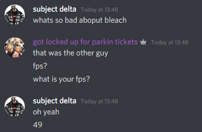

minecraft clients (no adfocus links)
Atomic (Public)
Incredibly based client very good features, has some public item funnies and has unique features
like build in nbt editor. Doesn't get updated that often for public users though. like 7/10
jar download
(github)
homepage (github)
BleachHack
Decent client, visuals go brazy, pretty funny modules like autoparkour smart mode, and complete feature
set
overall. Haven't used it in a while but one of the main drawbacks is the rendering performance. I'll
still
give it 6/10

jar
download (github)
homepage
WURST
Good for cheating in survival worlds because of its baritone-integrated modules. 👍 5/10
download
homepage
Ares
It's pretty good for crystal pvp from what I understand, but I haven't used it enough to be able to
verify that. Visuals kinda mid but modules good. 6/10
download (join their discord for 1.17.1 jar)
homepage
Meteor
Good visuals, a bunch of modules, kinda based (also broken compatability with atomic) 0/10
download
homepage
Atomic (Private)
p 100 hack hits p rreally hard i like atomic also no rat 10/10
download (jar)
homepage (githb)
Shadow
saturn please give me shadow please bro i will add good review on yelp 0/10 for now
go beg here
here is also good
note about asher y/duping.info
Too many skids fr fr had to
speak
up. For example: (trigger warning: iq issues) duping.info
This website is run by one "Asher_Y" who is just the type of mf that's the exact type of person you'd expect
to run a website like this. Here's my analysis (im psychology major btw) of Asher_Y:
- racist mc name (7 year old)
- uses python script for status cycling (python skid)
- asks people to dm for python script (no github?)
- has faq (not even a bignamer)
- addresses a scam with "fuck off" (as if bots read his about me and are like "oh my bad fam nvm")
- bought a domain that 1) lists your ip (and logs it (if it doesnt that's literally just retardation)) 2)
has a
youareanidiot redirect (oh no im so scare this is definitely bypassing my modern browser) 3) is pasted as
shit
(literally forgot to remove comments from his pasted html header) 4) uses absurd amount of imports and still
looks shit
(this is what happens when you paste from different sources and have to include all of their
dependencies)
- Q: "What makes dupes work?" A: "Dupes are typically caused by the exploitation of glitches in the game.
Dupes often
include books, donkeys, llamas, shulker boxes and lag."
- Reminds people to not be retarded on a retarded website that has fucking adfoc.us links to public
downloads
TLDR: Asher_Y dm me on discord Authom#6742 tell me how im wrong